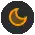

QP/C
8.0.2
Real-Time Embedded Framework
You can use this online help in various ways: either sequentially from beginning to end or just by quickly locating the interesting topic.
You can toggle the Dark/Light Mode of the help display with the button in the top-left corner, below the logo.
The Light display mode is selected
 The Dark display mode is selected
The Tree View pane on the left-hand side of the browser displays the hierarchical Table of Contents, which can be either linked-to or unlinked-from the Current Topic displayed on the right-hand side. You can toggle between the two modes by pressing the Link/Unlink Current Topic icon at the top of the Tree View pane.
 When the Tree View is linked to the Current Topic, the Tree View will always follow the currently viewed topic, by expanding and highlighting the pertinent section of the hierarchical Table of Contents.
When the Tree View is linked to the Current Topic, the Tree View will always follow the currently viewed topic, by expanding and highlighting the pertinent section of the hierarchical Table of Contents.
 When the Tree View is unlinked from the Current Topic, the Tree View will show only the explicitly selected section of the hierarchical Table of Contents and will not follow the topics activated by internal documentation links.
When the Tree View is unlinked from the Current Topic, the Tree View will show only the explicitly selected section of the hierarchical Table of Contents and will not follow the topics activated by internal documentation links.
You can move from topic to topic by means of the Next: link at the bottom of each page.
You can use the following elements:
If you like this styling for doxygen, it is based on doxygen-awesome-css↑. The styling with modifications made by Quantum Leaps is available as part of the spexyen documentation system↑.